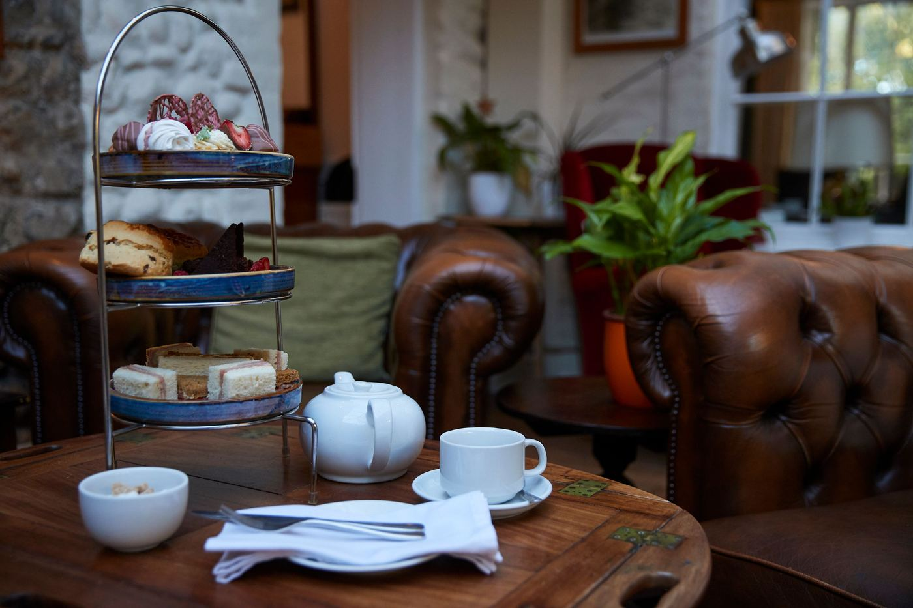

Sandy toes, dripping ice creams, pockets full of foraged beach treasures — the seaside holiday is one of Britain's oldest traditions, and Cromer remains one of its most beloved settings.
It's where crabbing off the pier is a rite of passage, where dinner and a show still means fish and chips followed by an end-of-the-pier performance, and where the appeal has always been tradition rather than novelty. Few places embody that as well as The Grove, tucked just above the town on the clifftop road.
The house itself dates back some 250 years, built in the Georgian era, and has operated as a guest house since 1936 — ninety years this year of welcoming families back to the same gardens, the same woodland walk down to the beach, the same warm rooms at the end of a long day outdoors.

A Garden Estate Above the Sea
Set within four acres, the grounds offer an indoor heated pool, plenty of space to roam, and a short woodland path that opens onto the clifftop and down to the beach — guests get the rare feeling of being tucked away and perfectly connected to the coast at once.
Quality runs through everything The Grove does, nowhere more so than the food. In The Garden Rooms, Head Chef Sean O'Callaghan works closely with the estate's kitchen garden to bring produce from soil to plate within metres, while Cromer crab, lobster and prawns anchor the menu to the coastline just beyond the garden wall.

Sundown
On the front lawn sits Sundown, the estate's tipi restaurant — stone-baked pizzas, Norfolk tapas and easy cocktails by day, and by dusk, a warmer, slower kind of evening under festoon lights. It's the sort of place where everyone finds a favourite and everyone feels welcome.

A Natural Base for Golf on England's East Coast
When we sat down recently with Steve Pike of Spike on Golf & Travel to talk through what makes a North Norfolk golf trip work, The Grove came up naturally. It's become the stay we point guests toward for Royal Cromer and Sheringham — ninety years of doing the simple things well, which turns out to be exactly what a good golf break needs at the end of the day.

Many guests return year after year, already planning their next stay as they check out. Perhaps it's time to start your own tradition — the simple, familiar pleasure of a proper Norfolk seaside stay.
Plan Your North Norfolk Golf Break
Speak to Golf East Anglia about building The Grove into your itinerary.
Discover The Grove View Itineraries